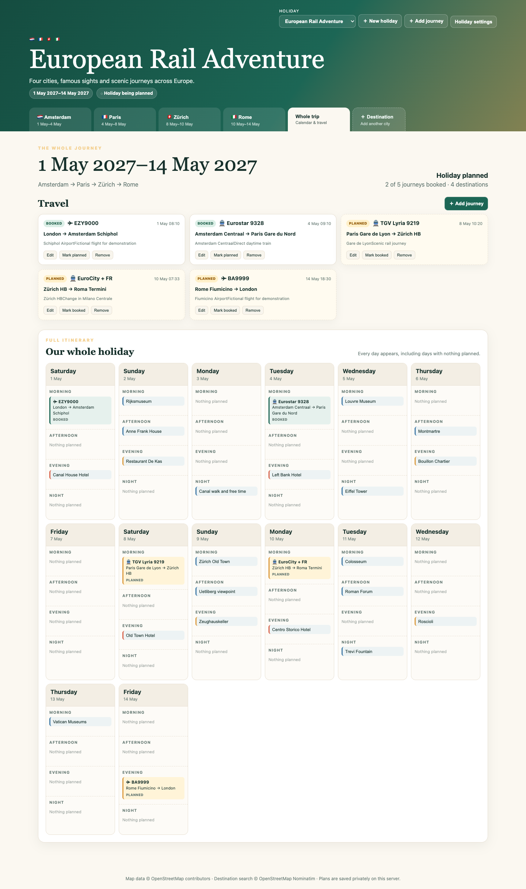
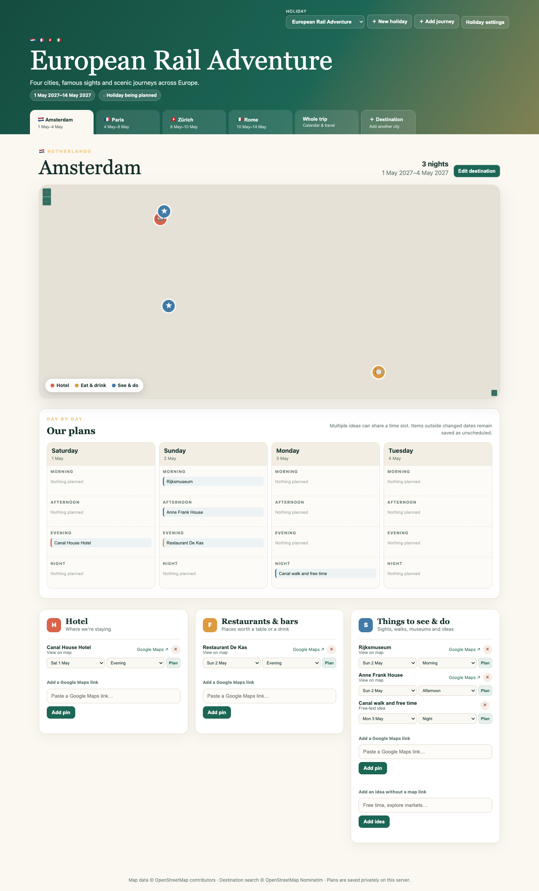
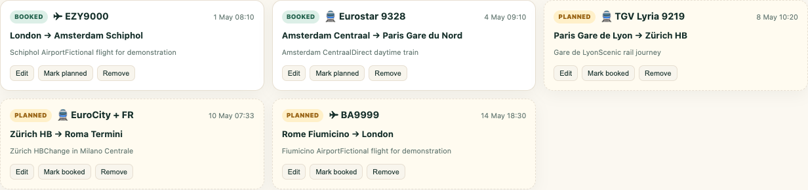

Fictional two-week demo
European Rail Adventure
Amsterdam, Paris, Zürich and Rome, with famous landmarks, restaurants, fictional flights and rail journeys. The demo contains no real traveller or booking data.



Simple deployment
Choose your own address and port.
HOLIDAY_HOST=0.0.0.0 \
HOLIDAY_PORT=8085 \
python3 server.pyPython 3.9+ is the only runtime dependency. A hardened systemd service, environment template and one-command demo seed are included.